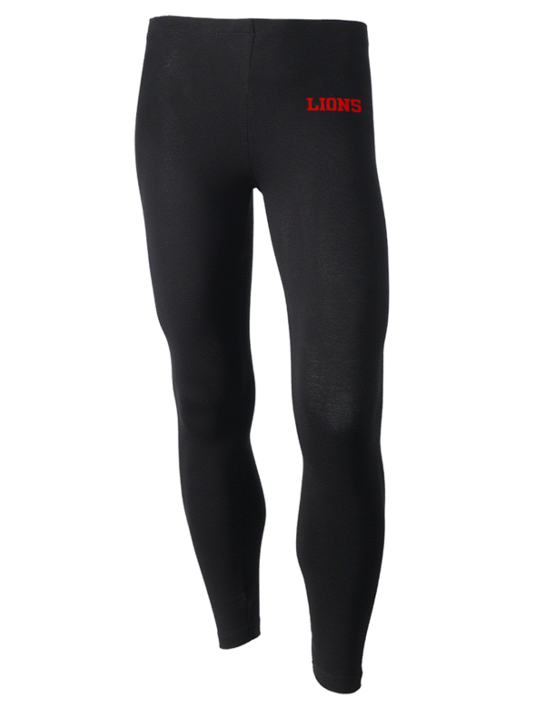
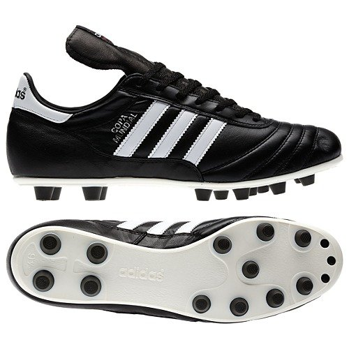
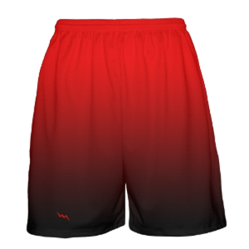
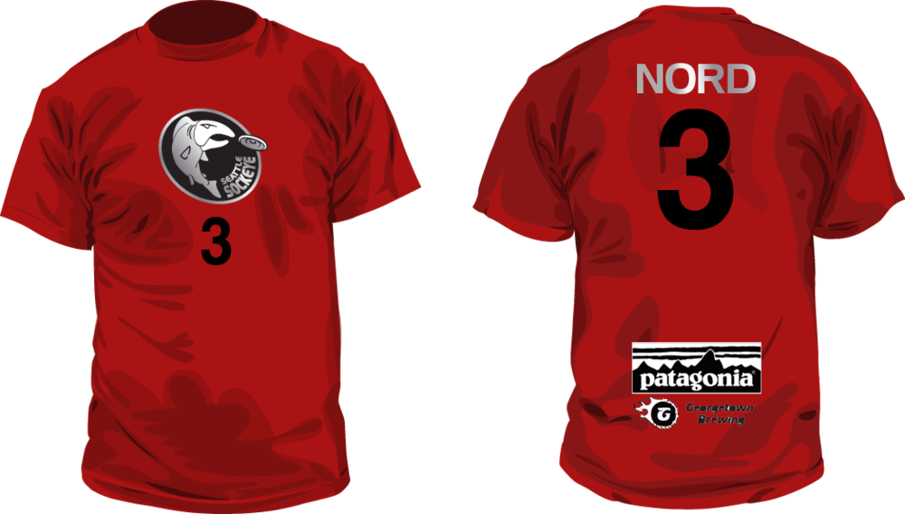
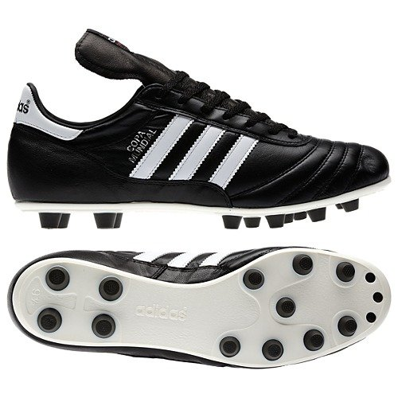
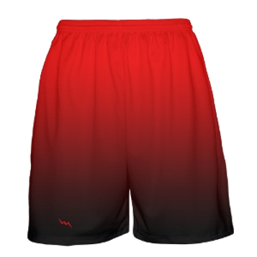
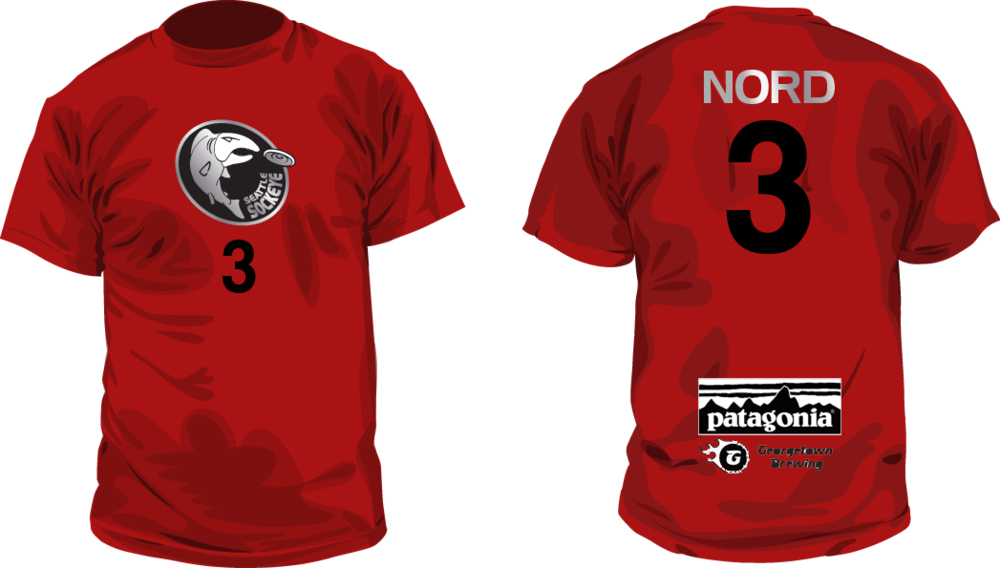

IV. Equipment
A. Any disc acceptable to both team captains may be used. If they cannot agree, the current Official Disc of the Ultimate Players Association is used.
B. Players may wear any soft clothing that does not endanger the safety of other players or provide unfair advantage.
C. Cleats with dangerous parts, such as metallic baseball cleats, track spikes, or worn or broken studs with sharp edges, are not allowed.
D. Each player must wear uniform or other clothing distinguishing that player from players on the other team. In tournament play, matching uniforms and numbered jerseys are recommended.
E. Players may not use clothing or equipment to unfairly inhibit or assist the movement of the disc or another player.
   
  
V. Length of Game
A. Game to goals: A game is played until one team first reaches or exceeds the game total, with a margin of at least two goals or until a cap is reached.
1. Caps are maximum score limits imposed before or during a game to limit the time required to declare a winner. The game ends when one team's score first reaches the cap.
a. A point cap is a maximum score limit imposed before the event.
b. A soft time cap is a maximum score limit imposed during a game once a predetermined time of play has elapsed and after the current scoring attempt is completed.
c. A hard time cap is the ending of the game once a predetermined time of play has elapsed and after the current scoring attempt is completed. If the score is tied, play continues until one additional goal is scored.
2. The team with the most goals at the end of the game is the winner.
3. A standard game has a game total of 15, with a point cap of 17.
B. Halftime begins when one team's score first reaches or exceeds half of the game total, and lasts ten minutes.
C. Overtime begins when the score is tied at one goal less than the game total (e.g., in a game with a game total of 15 goals, overtime begins when the score reaches 14-14).